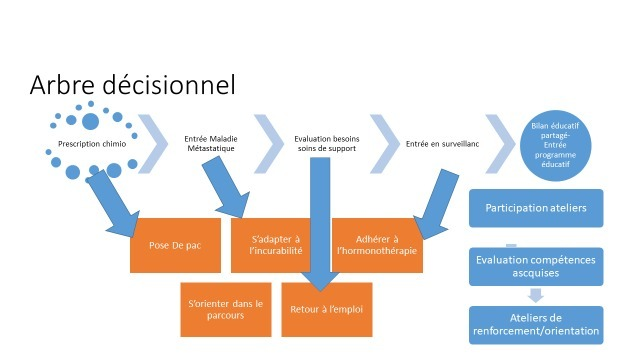

Education Thérapeutique
Contexte : Inscrite dans la loi HPST, Priorité du plan cancer 2014-2019 puis promue dans les différents axes de la stratégie décennale de l’INCA, l’éducation thérapeutique patient (ETP) fait partie intégrante d’un parcours de soins des patientes suivi pour un cancer du sein.
L’ETP, « vise à aider les patients à acquérir ou maintenir les compétences dont ils ont besoin pour gérer au mieux leur vie avec une maladie chronique… Elle comprend des activités organisées, … pour but de les aider, ainsi que leurs familles, à comprendre leur maladie et leur traitement, à collaborer et à assumer leurs responsabilités dans leur propre prise en charge, dans le but de les aider optimiser leur qualité de vie ».
L’ETP est un processus permanent, intégré dans le parcours de soins, qui nécessite l’engagement et la participation des patients, la co-construction avec les patients partenaires et la formation des professionnels et patients partenaires qui la délivrent.
En Ile de France, l’ARS recense :
Deux pôles ressources ETP non spécifique à la cancérologie
https://www.coordetp95.fr/coordetp-95
1 seule unité transversale d’ETP (UTEP) spécialisée en cancérologie et 12 UTEPs polyvalentes
Ces structures coordonnent :
15 programmes cancer dont le cancer du sein, avec la thématique des anticancéreux oraux pour plus d’un tiers.
1 programme global toute pathologie cancéreuse et toutes thématiques
2 programmes spécifiques Lymphœdème, et cancer et Travail
3 programmes spécifiques cancer du sein : Apres chirurgie, parcours du sein et après cancer
Ref https://www.etp-iledefrance.fr/
Organisation
Les activités se déclinent en parcours éducatifs, dans le cadre d’un programme d’éducation thérapeutique patient, ou d’actions éducatives ciblées hors programme, tout au long du parcours de soins. Elles peuvent s’intégrer dans les consultations d’annonce ou de suivis infirmiers en structurant la trame de consultation en bilan éducatif, ou encore en intervention dans des HDJ.
Le format peut être individuel ou collectif, en présentiel ou en visio.
Arbre décisionnel

Le bilan éducatif partagé peut être réalisé au décours de différents moments du parcours,
Ou s’intégrer directement dans les consultations d’annonce ou de suivi infirmier.
Les ateliers sont proposables directement en actions éducatives ou dans le cadre du programme éducatif avec évaluation des compétences acquises.
Accompagner l’acquisition des compétences dans le cadre du cancer du sein :
Propositions non exhaustives :
Références :
Bourg, M. A., Ninotta, A., Feld, D., Guarato-Rousset, V., & Pérol, D. (2010). Intérêt de l’éducation thérapeutique en cancérologie. Bulletin Infirmier du Cancer, 10(1), 14-20.
https://www.has-sante.fr/jcms/c_1241714/fr/education-therapeutique-du-patient-etp
https://www.has-sante.fr/upload/docs/application/pdf/etp_-_guide_version_finale_2_pdf.pdf
Kalogéropoulos C, et al. Naissance du bilan éducatif partagé unique et commun à l'Institut Curie. Bull Cancer (2021)
Pérol, D., Toutenu, P., Lefranc, A., Régnier, V., Chvetzoff, G., Saltel, P., & Chauvin, F. (2007). L’éducation thérapeutique en cancérologie: vers une reconnaissance des compétences du patient. Bulletin du cancer, 94(3), 267-274.Bourg, M. A., Ninotta, A., Feld, D., Guarato-Rousset, V., & Pérol, D. (2010). Intérêt de l’éducation thérapeutique en cancérologie. Bulletin Infirmier du Cancer, 10(1), 14-20.
Référentiel AFSOS Education thérapeutique et cancer (chimiothérapie orale), MAJ 2022